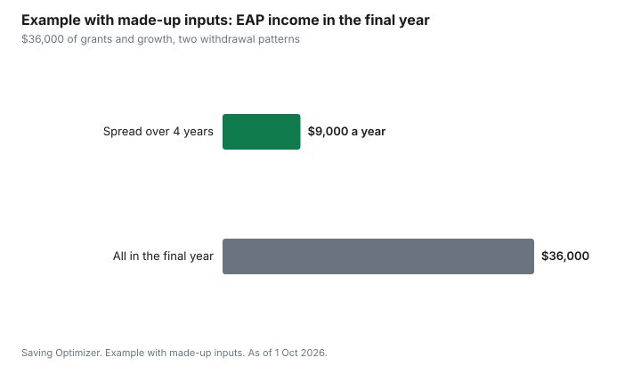

Kids · Canada
RESP Withdrawals: EAP vs PSE and How to Keep Your Student's Tax Low

RESP withdrawals in Canada come in two kinds. An educational assistance payment (EAP) pays out the grants and investment growth, and it is taxable income for the student. A post-secondary education (PSE) withdrawal returns the contributions you put in, tax-free to you. Because most students earn little, EAP income is often covered by the student's basic personal amount and tuition credits, so the usual plan is to draw EAPs steadily while the student is enrolled and has low income. In the first 13 consecutive weeks of full-time study, EAPs are capped at $8,000.
Key takeaways
- EAP: grants (CESG, Canada Learning Bond, provincial grants) plus investment growth. Taxable to the student.
- PSE withdrawal: the contributions. Tax-free, paid to the subscriber or the student as you instruct.
- EAPs are capped at $8,000 in the first 13 consecutive weeks of full-time study, and $4,000 per 13-week period for part-time.
- EAPs can be paid up to six months after the student leaves school, if the plan allows.
- Example with made-up inputs: drawing $9,000 of EAP a year over four years instead of $36,000 in one year keeps most of it under the student's credits.
What is in an RESP
An RESP holds three kinds of money. Contributions are what you deposited. Government grants include the Canada Education Savings Grant, the Canada Learning Bond and any provincial grant. Investment income is the growth on all of it. The plan administrator tracks each pool. Ask for a statement that shows them separately before the first withdrawal. The CESG guide and the Canada Learning Bond guide cover the saving years.
| Withdrawal | What it pays out | Tax |
|---|---|---|
| EAP (educational assistance payment) | Grants and investment income | Taxable to the student |
| PSE (contribution withdrawal) | Your contributions | Tax-free |
When the student qualifies
EAPs are paid when the student is enrolled in a qualifying educational program, full-time, or a specified educational program, part-time, at a post-secondary school. The administrator will ask for proof of enrolment. For full-time study, EAPs are limited to $8,000 in the first 13 consecutive weeks. After that, there is no limit, unless the student is out of a qualifying program for 13 consecutive weeks in a 12-month period. For part-time study, the cap is $4,000 for each 13-week period.
EAPs can still be paid for up to six months after the student stops being enrolled, if the plan allows and the payment would have qualified just before enrolment ended. That window can catch the last term's growth.
Keeping the student's tax low
EAP income is added to the student's other income. A full-time student with a summer job often has income below the basic personal amount, and tuition credits can reduce tax further. Spread EAPs across the years of study rather than taking them all in the last year, when a co-op term or first job can raise income.
Use PSE withdrawals for the rest of the cash need, because contributions are tax-free whenever they come out. Leaving contributions in until later years keeps the money growing, but if the student stops studying with grant money still in the plan, the unused grants must be returned and growth can be taxed heavily as an accumulated income payment. Using the grant and growth pool first is generally safer.
Tuition credits and the transfer to a parent
The student's school issues a T2202 for eligible tuition. The student uses the tuition amount first to reduce their own tax to zero, and can transfer up to $5,000 of the current year's federal amount, minus what they used, to a parent or grandparent. Unused amounts not transferred carry forward to the student's future years.
Example with made-up inputs: one year versus four
These numbers are an example with made-up inputs, not tax calculations. A plan holds $36,000 of grants and growth. Paid out as $9,000 of EAP in each of four years, the student's income from the plan stays low each year, and with a small summer job it may stay under the basic personal amount. Paid out as $36,000 in the final year, alongside a co-op salary, most of it would be taxed. The tax result depends on the student's other income and credits.
| Year | Spread evenly | All in final year |
|---|---|---|
| Year 1 | $9,000 | $0 |
| Year 2 | $9,000 | $0 |
| Year 3 | $9,000 | $0 |
| Year 4 | $9,000 | $36,000 |

Sources
- CRA, Registered Education Savings Plans payments, as of 1 Oct 2026. EAP and PSE; $8,000 in the first 13 consecutive weeks full-time; $4,000 per 13 weeks part-time; six months after enrolment ends.
- CRA, RC4092 Registered Education Savings Plans, as of 1 Oct 2026.
- CRA, Line 32400 Tuition amount transferred from a child or grandchild, as of 1 Oct 2026. Up to $5,000 of the current year's federal amount.
- The $36,000 and $9,000 amounts in the example table and chart are made-up inputs.
Frequently asked questions
What is the difference between EAP and PSE withdrawals?
An EAP pays out the RESP's grants and investment growth and is taxable to the student. A PSE withdrawal returns your contributions and is tax-free.
How much can be withdrawn from an RESP in the first semester?
For full-time study, EAPs are capped at $8,000 in the first 13 consecutive weeks. Contributions can also be withdrawn as PSE. Part-time study has a $4,000 EAP cap per 13-week period.
Who pays tax on RESP withdrawals?
The student pays tax on EAPs, which are added to their income. Many students owe little or nothing because their income is low and tuition credits apply. Contributions withdrawn as PSE are not taxed.
Should I withdraw EAP or contributions first?
Generally use EAPs steadily while the student is enrolled and has low income, and use contributions for the rest. If the student stops studying with grant money left, unused grants must be returned and growth can face extra tax.
Can RESP money be withdrawn after graduation?
EAPs can be paid for up to six months after the student stops being enrolled, if the plan allows and the payment would have qualified just before enrolment ended.
Researched and drafted with AI assistance and fact-checked against official Canadian sources. How we create content.
Disclosure: RESP providers are an offer type; none is named or ranked. Saving Optimizer may earn a commission if a partner link is added later; no partnership is claimed. Education only. This is not tax advice.